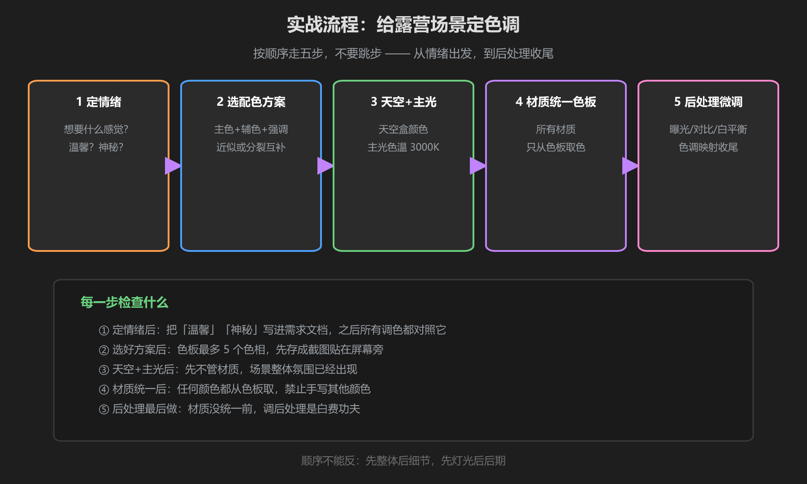
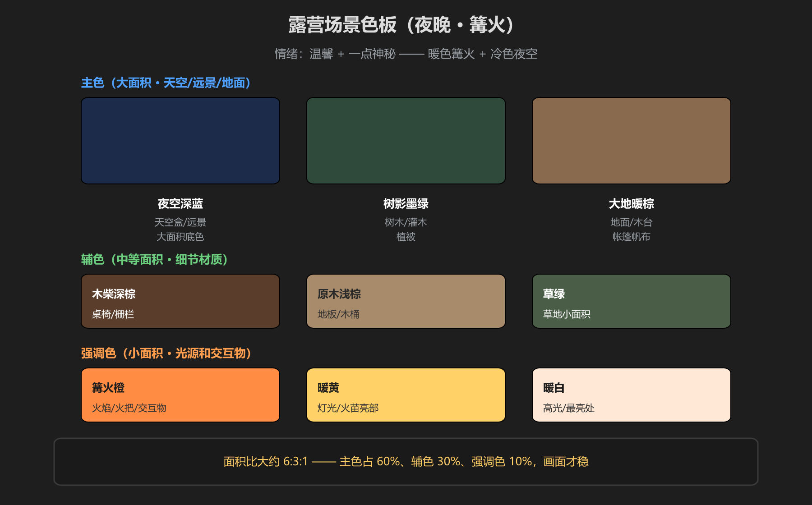

第 5 篇：实战：给露营场景定色调
目标：一个「夜晚 · 篝火」的露营场景，要温馨带一点神秘。素材不用多 —— 帐篷、篝火、树木、夜空，按下面五步走。
五步流程

图：定情绪 → 选配色 → 调天空和主光 → 材质统一色板 → 后处理微调
步骤 1：定情绪
写一句话需求：「温馨 + 一点神秘：暖火把周围照亮，远处理在深蓝夜色里」。这句话写下来，之后每一步调色都对照它。
步骤 2：选配色方案
夜晚场景用分裂互补：主色夜空深蓝，强调色篝火橙黄（蓝色的互补色是橙色，用橙+红橙就构成分裂互补），辅色用近似于蓝的墨绿、暖棕。
为什么是它：纯互补（蓝+橙）对比最强适合按钮，但大面积看会累；分裂互补保留了「蓝橙对比」的浪漫感，又耐看 —— 正好配「温馨+神秘」。
步骤 3：调天空盒和主光
- 天空盒：深蓝夜空，Tint 微微偏紫（神秘感）
- 主光：Directional Light 模拟月光 → 冷色 6500K 以上，强度压低（0.3-0.5）
- 篝火光：加一盏 Point Light 在火堆处 → 暖色 2800-3200K，强度高、范围小
- 环境光：设为深蓝灰 —— 阴影发蓝不发黑，符合「阴影冷」
步骤 4：材质统一色板

图：本场景色板 —— 主色 60%、辅色 30%、强调色 10%
- 主色（大面积）：夜空深蓝
#1C2B4A、树影墨绿#2F4A3A、大地暖棕#8A6A4F - 辅色（细节）：木柴深棕
#5A3E2B、原木浅棕#A88B6A、草绿#4A5D46 - 强调色（光源/交互物）：篝火橙
#FF8C42、暖黄#FFD166、暖白#FFE8D6
把这张色板做成一个备忘图（截图放桌面或场景里），所有材质 Base Color 从里面取，禁止手写新颜色。面积比大约 6:3:1，画面才稳。
常见翻车：给材质加了自己喜欢的蓝色做装饰 —— 色板外的新色相会把「蓝橙对比」冲散。想加变化，就加色板的「变体」（饱和度/明度变体），不加新色相。
步骤 5：后处理微调
- Color Adjustments：曝光 -0.2 压暗夜空，对比度 +10 让火堆更亮，饱和度保持或微降（夜场景别太艳）
- White Balance：画面整体偏黄就把 Temperature 往冷拉一点，反之加暖 —— 目标是「火堆暖、夜空冷」各归其位
- Tonemapping：选 ACES，高光（火苗）不刺眼、暗部不发灰
- 雾：开启 Fog，深蓝灰色、低密度 —— 远处树木融入夜色，神秘感拉满
学前检查清单
- 用一句话写出了场景的情绪定位
- 能说出自己用了哪种配色方案、为什么
- 天空盒、月光（冷）、篝火（暖）三个颜色各就各位
- 所有材质颜色来自色板，没有色板外的颜色
- 后处理只做了微调，没有靠它「救」材质
- 截图前后对比：白天默认光 vs 调色后，能说出差在哪